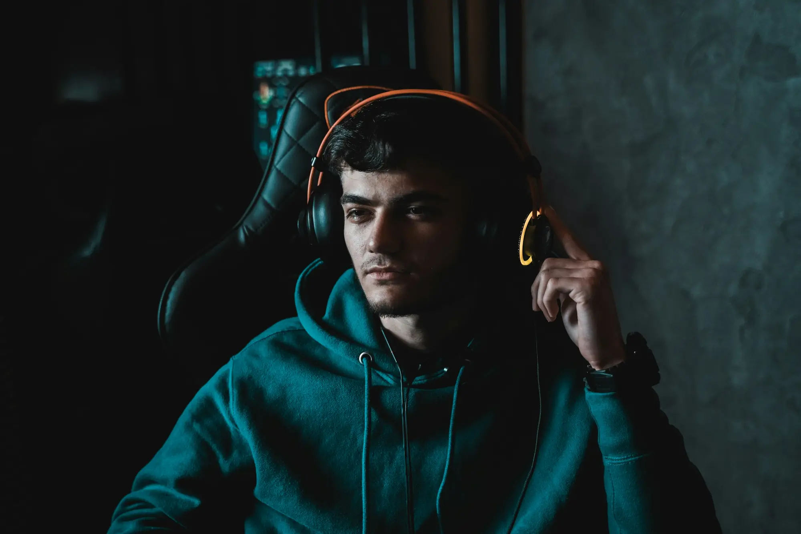
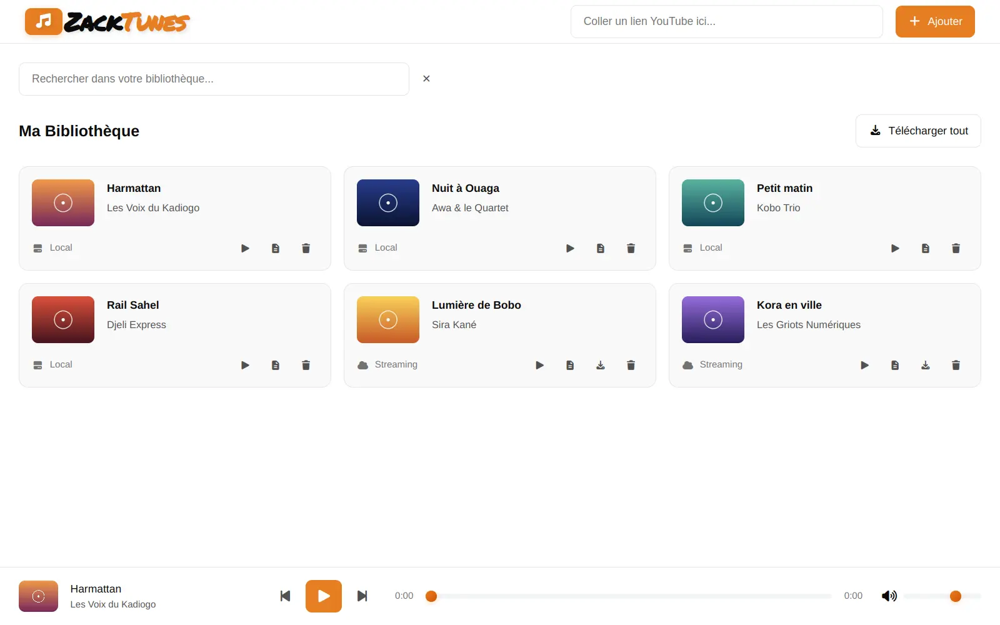
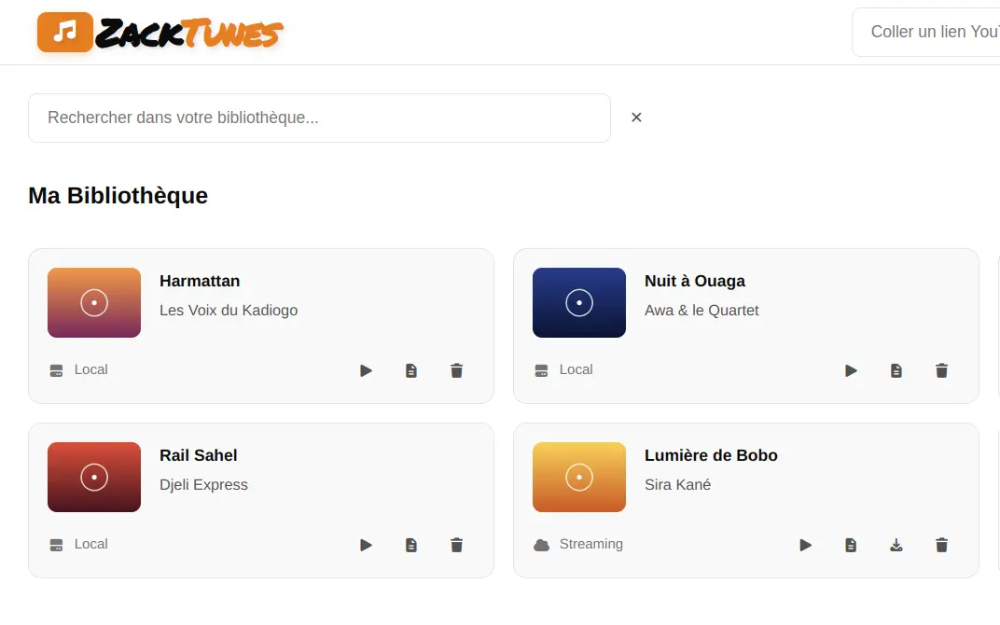
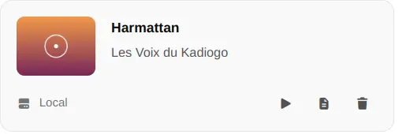
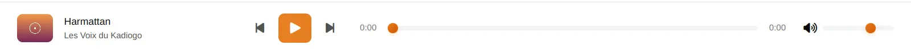

Un lien suffit
Collez l'adresse d'une vidéo : titre, artiste et pochette arrivent tout seuls.

Streaming ou MP3écoutez, puis gardez
Gratuit, sans compteWindows · macOS · Linux
Collez un lien, ZackTunes l'ajoute à votre bibliothèque. Lancez-le tout de suite en streaming ou téléchargez le MP3 pour l'écouter hors ligne.
Gratuit · Windows, macOS, Linux




The dust is dancing on the roadLa poussière danse sur la route
Evening comes and the city glowsLe soir tombe et la ville s'illumine
Turn it up, let the music goMonte le son, laisse filer la musique
Un lecteur simple, qui garde votre musique chez vous.
Collez l'adresse d'une vidéo : titre, artiste et pochette arrivent tout seuls.
Un titre ou toute la bibliothèque d'un clic, en MP3 192 kbit/s, pour écouter sans connexion.
Retrouvez un morceau par son titre ou son artiste, les résultats s'affichent pendant la frappe.
Bibliothèque et MP3 sont rangés dans votre dossier Musique, sous ZackTunes. Aucun cloud.
Pas d'inscription, pas d'abonnement, pas de publicité. Installez et écoutez.
Le moteur de lecture YouTube se met à jour seul au démarrage, pour que vos liens continuent de marcher.
Trois gestes, et le morceau est à vous.
Copiez l'adresse d'une vidéo YouTube et collez-la dans le champ en haut de la fenêtre.
Le morceau rejoint votre bibliothèque. Appuyez sur lecture, il démarre en streaming.
Téléchargez-le en MP3 : il passe en « Local » et reste disponible même sans internet.
Les fichiers viennent directement de la dernière version publiée sur GitHub.
Windows 10 et 11, 64 bits
Si Windows affiche « Windows a protégé votre ordinateur », cliquez sur Informations complémentaires puis Exécuter quand même : l'application n'est pas encore signée.
macOS 11 ou plus récent
L'application n'est pas signée par Apple. Au premier lancement, faites un clic droit sur ZackTunes > Ouvrir, puis confirmez. Sur macOS 15 et plus : Réglages Système > Confidentialité et sécurité > Ouvrir quand même.
64 bits (x86_64)
Paquet .deb : sudo apt install ./zacktunes_amd64.deb (installe aussi ffmpeg). AppImage : rendez le fichier exécutable et installez ffmpeg avec le gestionnaire de paquets de votre distribution.
Toutes les versions, les notes de version et les sommes de contrôle SHA-256 sont sur la page des releases GitHub.
Oui, entièrement. Pas d'abonnement, pas de publicité, pas de compte à créer.
Dans votre dossier Musique, sous ZackTunes : la bibliothèque (bibliotheque.json), les pochettes et les fichiers MP3. Vous pouvez les sauvegarder ou les copier sur un autre appareil comme n'importe quel fichier.
Pour ajouter un morceau et l'écouter en streaming, oui. Les morceaux téléchargés en MP3 se lisent ensuite sans connexion.
YouTube change régulièrement. ZackTunes s'appuie sur l'outil libre yt-dlp et le met à jour automatiquement au démarrage. Redémarrez l'application avec une connexion active, puis réessayez.
ZackTunes est prévu pour un usage personnel. Respectez les droits des artistes et les conditions d'utilisation de YouTube : ne téléchargez que des contenus que vous êtes autorisé à conserver.